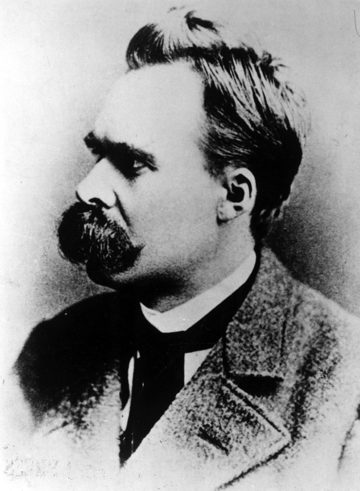

Friedrich Nietzsche
Friedrich Nietzsche é um dos principais filósofos da contemporaneidade. Sua vasta obra inaugurou temas na filosofia que colocam em questão assuntos tidos como “intocáveis”
Friedrich Nietzsche foi um filólogo (estudioso de línguas clássicas, como o latim e o grego antigo), poeta e filósofo alemão contemporâneo, autor de uma vasta e polêmica obra. Seus livros deixaram os primeiros indícios do surgimento da filosofia contemporânea. Nietzsche dedicou-se a estudar a moral judaico-cristã e operou uma espécie de comparação das sociedades antes e depois do cristianismo, tendo classificado este como o fator central do enfraquecimento do ser humano na era moderna. Nietzsche pode ser considerado um autor cuja vida e biografia influenciaram a produção e recepção de sua obra.

Fonte: https://mundoeducacao.uol.com.br/biografias/friedrich-nietzsche.htm
Voltar